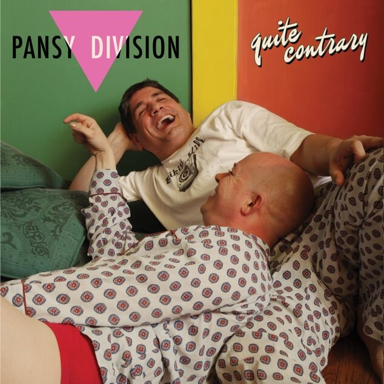

 Discography / Quite Contrary QUITE CONTRARY SONG LYRICS HE'S TROUBLE (Ginoli) I met him at a party We bonded right away It was obvious The attraction was 2-way He said he lived on a boat, but there was a fire So he’s surfing sofas for a little while I gave him my number but he lost his phone His message was clear as a dial tone He’s trouble (T-R-O-U-B-L-E) He’s trouble (T-R-O-U-B-L-E) Trouble with a capital T, T-R-O-U-B-L-E He wants to model again When he loses 10 pounds But the 40s he drinks in the park Are weighing him down He’s always wearing the same old hat His hair is receding, he’s touchy bout that He’s always broke but always has a drink Add it up it’s hard not to think… (repeat chorus) It’s one disappointment after another It’s always some excuse about something or other Gave him the benefit of the doubt But soon your patience just runs out (repeat chorus) He’s trouble, he’s trouble, he’s trouble… LOVE CAME ALONG (Freeman) I once wrote a song about being a slut Nothing meant more to me than busting a nut Now I’ve grown older and that life ain’t making the cut I’m willing to follow my gut and admit I was wrong Because love came along I had it easy and sex was so easy to get I had no problem with fucking someone I’d just met I’ve had some nights that I’m sure I will never forget But now all the rules have reset because love came along Because love came along For me, life was fancy and free And I’d give it up for a man if he fancied me You see, sex was all quantity And with hundreds of men in my wake I think you’ll agree that There’s not a thing wrong with being a slut Except for the part where I’ve hit a rut And now that I’m older the question at hand is “so what?” I’m willing to follow my gut even if I am wrong Because love came along I was so easy, had sex with whomever I met I had no problem avoiding diseases and yet I woke up sometimes with some guys that I really regret But now all the rules have reset because love came along Because love came along For me, life is fancy and free And I give it up for one man who has taken me You see, no man’s better than he And with hundreds of men in my wake I can judge easily and Now all the rules have reset because love came along I never wake up with regret now that love came along I’m only a slut for my man now that love came along Only busting a nut in one man now that love came along I’m the happiest guy in the world now that love came along I know you’ll grow tired of hearing it so I’m ending this song YOU'RE ON THE PHONE (Reader/Freeman/Illades) I’ve spent a lifetime leaning on walls And spent a thousand nights alone just screening my calls But now the phone is singing your song The ringing is the sound I had missed all along The sweetest sound I’ve ever known ‘Cause you’re on the phone You’re on the phone You’re always on the phone It seems of late our connection is bad And I can’t help but miss those conversations we had When I look up sending a text You’re staring at your phone and checking up on your ex We’re side by side but all alone ‘Cause you’re on the phone You’re on the phone You’re always on the phone I’m always on my own We’re both always on the phone Turn off the phone And dial my You’re on the phone KISS ME AT MIDNIGHT (NEW YEAR'S EVE) (Ginoli) Well it wasn’t the worst year But it wasn’t the best And now that it’s ending I’m glad to put it to rest But there’s a party on New Years I want you to attend Cause I know how I want To bring the year to an end So kiss me at midnight on New Year’s Eve Ring in the New Year with me Oh Kiss me kiss me kiss me, Kiss me kiss me kiss me, Kiss me at midnight on New Year’s Eve The calendar pages Are all flying by Each year passes faster Am I running out of time? But there’s a party on New Years And I want to take you Cause at the end of the year I know what I want to do So kiss me at midnight on New Year’s Eve Ring in the New Year with me Oh Kiss me kiss me kiss me, Kiss me kiss me kiss me, Kiss me at midnight on New Year’s Eve Oh Kiss me kiss me kiss me, Kiss me kiss me kiss me, Kiss me at midnight on New Year’s Eve HALFWAY TO NOWHERE (Freeman) Congratulations: you’ve made it this far Not much of a future the way that things are No job, no money, and worse of all, no plan Don’t have much to speak of, not even a car I used to have to come and pick you up after closing time at the bar I thought by now you would’ve had enough, living life like Peter Pan Because you’re halfway to nowhere And you’re running out of time I’m going to be frank with you ‘cause if I don’t who will Since I left you’ve spent a lot of time going farther down that hill I won’t be there to catch you and it’s not that I don’t care Because you’re halfway to nowhere And you’re running out of time Because you’re halfway to nowhere And you’re running out of time I wish we could be closer but you know that I don’t dare Because you’re halfway to nowhere And you’re running out of time WORK ON IT, BABE (Ginoli) Did you think you were doing me a favor? When you said that you’d go out with me But now I’m not diggin’ the flavor Of what you think the two of us should be ‘Cause if you want to be interesting You’ve got to be interested in things Otherwise you’re just another pretty face But you know, you know you gotta Work on it, babe You gotta work on it babe Yeah, work on it, babe Or you’re never gonna keep a man Did you think you were doing me a favor? When your friends said, Why are you with him? Was it because there was something deep to savor Or was it just, was it just a whim? ‘Cause if you want to be interesting You’ve got to be interested in things Otherwise you’re just another pretty face Who’ll continue to get chased But you know, you know you gotta Work on it, babe You gotta work on it babe Work on it, babe You gotta work on it babe Yeah, work on it, babe Or you’re never gonna keep a man I'M THE FRIEND (Ginoli) I’m the friend You know me In the cast But never the lead In the back A supporting role Not the one Whose story gets told But I hang around till the end I’m the friend I’m the friend A shoulder to cry on And depend To trust and rely on You know me So consistent You can talk And I’ll be there to listen I don’t get the guy in the end I’m the friend I’m the friend whose pride gets swallowed Always waiting for tomorrow Not the one who wins the prize Always watching from the side Keep my feelings to myself The focus always somewhere else On the edges, on the fringe On the outside looking in Wary of the final score But always hold out hope for more I’m the friend Taking the back seat Not the one You’re waiting to see Overlooked Taken for granted Know my role Even when I can’t stand it When it’s all been done and said When it’s all been done and said When it’s all been done and said I’m the friend I’m the friend I’m the friend BLAME THE BIBLE (Reader/Freeman/Illades) He’s a politician with a love of the lord He’s getting kickbacks from his seat on the church board He voted no, of course, on your civil rights And if he gets elected he’d reverse that, all right Your basic needs are not his priority He’s got his reputation to oversee So if you’re gay or if you just don’t fit in He’ll introduce you to the wages of sin He hides behind the Bible’s libel And wants to scare you straight He’s redesigned the Bible’s libel To justify his hate When asked if there’s a woman, he’d rather not say And what about this asshole caught with kiddie porn? He’s funneling funds through churches “to protect the unborn” I can’t believe, I can’t believe what they say They’ll say anything to get their own way They have no limits, they’ll just blatantly lie In the name of Jesus it’s all justified They’re quoting all the Bible’s libel The ones that suit their needs Promoting all the Bible’s libel With words but not their deeds What’s written in the Bible is libel No matter what you’ve heard We’re sick of all the Bible’s libel So don’t believe a word Do you want him for your president? NO Do you want him for your president? NO Do you want her for your president? NO Do you want him for your president? HELL NO Do you want religion controlling your life? HELL NO Do you want religion controlling your life? HELL NO Do you want religion controlling your life? HELL NO Then I want you to repeat after me We don’t need the Bible, Bible So throw it all away Yeah, we don’t heed the Bible, Bible Any-fucking-way What’s written in the Bible is libel But slanders you and me So spit into the Bible, Bible And just be free Isn’t it about time we gave up on Christianity? I mean really, it’s so unnecessary and so deceitful. Using verses from the Bible to validate their hate Just look at all the damage they’ve caused. So let’s take away the one thing they use to perpetuate this worldwide fraud And tear up the Bible Can you tell the difference between any of those other religions? HELL NO Do we really need any of them anymore? HELL NO MISTAKES (Ginoli) I used to try To psych myself out Pretending the ending Was never in doubt Mistakes So confusing Mistakes And you were a doozy Mistakes, mistakes, mistakes. Right at the start Things seemed terrific But things looks rosy When you don’t get too specific (repeat chorus) A promising beginning Turned possessive and clinging I should have known I should have known (repeat chorus) IT'S A SIN (Lowe/Tennant) oh, just look up the lyrics on the internet MY HEART ACHES FOR YOU (Ginoli) We get along so easily We can talk and talk endlessly Though I love that we’re close friends I hate that’s where it ends Cause you do it all for me I’ve been waiting half my life For someone like you to arrive But no matter what I try I will never be your type And I know that can’t be denied But my heart aches for you Yeah my heart aches for you I’ve waited half my life But I’ll never be your type Still my heart aches for you I’ve dated so many guys And a lot of them were really nice But I must report That they all fell short And things with you feel so right There’s really nothing I can do To try to change your point of view It’s nobody’s fault It’s just the way things are But now I’m supposed to find somebody new? But my heart aches for you Yeah my heart aches for you I’ve waited half my life But I’ll never be your type Still my heart aches for you Still my heart aches for you (IS THIS WHAT IT'S LIKE) GETTING OLD (Freeman) My phone just don’t ring like it used to Some of my best friends are dead And the most exciting thing in my evening Is a hot cup of tea before bed I’ve got more aches and pains than I used to And now I’ll avoid a big crowd I hate the suggestion but there is a question I find myself asking out loud Is this what it’s like, is this what it’s like Is this what it’s like getting old? I cherish each day and each roll in the hay Is this what it’s like getting old? Please do not think I’m complaining I’m merely presenting the facts And while I am at it, I might as well add It takes three drinks a day to relax I never expected to be here Or thought I would end up like this So allow me to ponder this question, I wonder What’s happened to years that I’ve missed? Is this what it’s like, is this what it’s like Is this what it’s like getting old? I don’t want no sympathy, but my mind ain’t what it used to be Is this what it’s like getting old? Is this what it’s like, is this what it’s like Is this what it’s like getting old? It takes longer, you’ll see, now I sit down to pee Is this what it’s like getting old? TOO MUCH TO ASK (Ginoli) To get my attention Ain’t that hard, you know After so many letdowns The bar is set so low Are we a bunch of babies? Are we a bunch of flakes? Been blown off so often How much more can I take? A return phone call A return text To simply so show up At a time and date that’s set To merely keep your word Is that too hard a task? Are all of these simple things Just too much to ask? Too much to ask… Are all of these simple things Just too much to ask? As I retreat into defeat so sadly Why do gay men treat each other so badly? Worshipping some app like a savior With no penalty or consequences For your bad behavior I wanted to touch your body I wanted to hold it I was ready to pitch a tent Now I’m gonna fold it Another guy who doesn’t show up Makes me wanna throw up Time to fucking grow up However old you are A return phone call A return text To simply so show up At a time and date that’s set To merely keep your word Is that too hard a task? Are all of these simple things Just too much to ask? Is a small amount of courtesy Just too much to ask? SOMETHING BEAUTIFUL (Ginoli) I wanted to say something beautiful But it didn’t turn out that way To say something to make things right But you’re not listening anyway When sadness turns to anger Resentment’s coming next After dumping me the way you did What did you expect? But we had something beautiful, We had something beautiful, We had something beautiful, For a long, long time One day you sat me down to talk But your reasons made no sense 6 months of holding in your feelings Came at my expense Can’t believe, still can’t believe How many months have passed Can’t believe that you and me Are now part of the past But we had something beautiful, We had something beautiful, We had something beautiful, And you threw it all away People walk into your life Sharing something deep and strong But just as quickly disappear They leave, forever gone So don’t wait for that phone to ring The silence is too loud Get used to the idea People always let you down I felt so comfortable with you I could really be myself Even though you broke things off It still felt like success ‘Cause we had something beautiful, We had something beautiful, We had something beautiful, And you had something beautiful Yeah we had something beautiful, We had something beautiful, We had something beautiful, For a long, long time